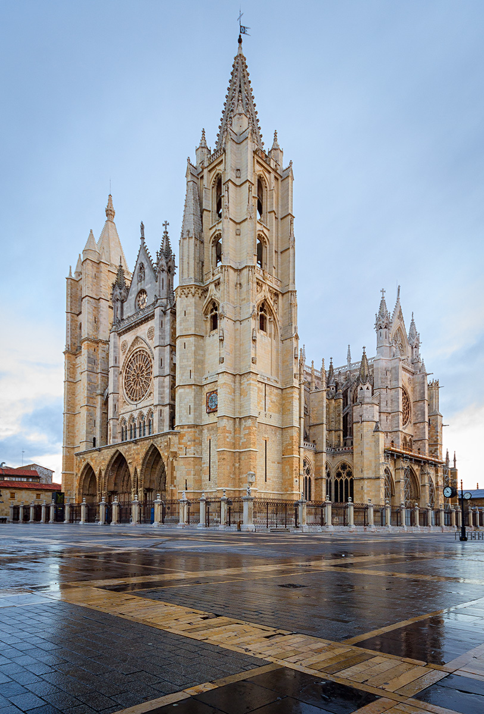
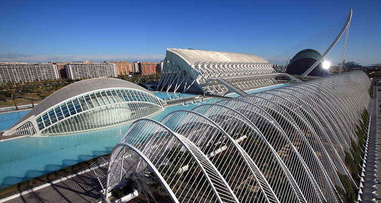

Tipo de ruta:Comercial
Dificultad:Dificil
Fecha de inicio: 2020-11-25
Hora de inicio: 2020-11-25T20:00:00
Descripción de la ruta: Ruta con turbulencias debido al retiterado mal tiempo en Asturias.
Personas adecuadas para la ruta: Jovenes
Duración de la ruta en minutos: 30
Agencia: Iberia
Lugar de inicio: Ranón
Dirección de inicio: 33459
Coordenadas:
Enlace recomendado: Referencia número 1
Enlace recomendado: Referencia número 2
Enlace recomendado: Referencia número 3
Recomendación de la ruta: 6
Leon
Descripción: León es un municipio y ciudad española ubicada en el noroeste de la península ibérica.
Distancia respecto al hito anterior en kilometros: 179
Coordenadas:
Tiempo respecto al hito anterior en minutos: 15
Catedral de León"> Ciudad de León"> Mapa de León">Enlace a video: Presentacion Leon
Enlace a video: Leon catedral
Enlace a video: Blog Leon
Valladolid
Descripción: Valladolid es un municipio y ciudad española situada en el cuadrante noroeste de la península ibérica, capital de la provincia de Valladolid y sede de las Cortes y el Gobierno autonómicos de Castilla y León.
Distancia respecto al hito anterior en kilometros: 138
Coordenadas:
Tiempo respecto al hito anterior en minutos: 5
Monumento Colón de Valladolid"> Ciudad de Valladolid"> Mapa de Valladolid">Enlace a video: Valladolid guía
Segovia
Descripción: Segovia es una ciudad y municipio español en la parte meridional de la comunidad autónoma de Castilla y León, capital de la provincia del mismo nombre.
Distancia respecto al hito anterior en kilometros: 116
Coordenadas:
Tiempo respecto al hito anterior en minutos: 3
Catedral de Segovia"> Ciudad de Segovia"> Mapa de Segovia">Enlace a video: Segovia guía
Madrid
Descripción: Madrid es un municipio y una ciudad de España.
Distancia respecto al hito anterior en kilometros: 90
Coordenadas:
Tiempo respecto al hito anterior en minutos: 7
Parque del Retiro en Madrid">
Tipo de ruta:Turística
Dificultad:Medio
Hora de inicio: 2020-12-25T18:00:00
Descripción de la ruta: Ruta tranquila con tendencia a tener algunas distracciones por el largo viaje.
Personas adecuadas para la ruta: Todas
Duración de la ruta en minutos: 150
Agencia: British Airways
Lugar de inicio: Barcelona
Dirección de inicio: 08820
Coordenadas:
Enlace recomendado: Referencia número 4
Enlace recomendado: Referencia número 5
Enlace recomendado: Referencia número 6
Recomendación de la ruta: 8
Burdeos
Descripción: Burdeos (en francés, Bordeaux, pronunciado /bɔʁˈdo/; en occitano, Bordèu pronunciado [buɾˈðɛw]) es una ciudad portuaria del sudoeste de Francia.
Distancia respecto al hito anterior en kilometros: 637
Coordenadas:
Tiempo respecto al hito anterior en minutos: 45
Plaza de la bolsa en Burdeos"> Ciudad de Burdeos">Enlace a video: Burdeos video ayuntamiento
Poitiers
Descripción: Poitiers es una ciudad y comuna situada en la Francia central, prefectura (capital) del departamento de Vienne, en la región de Nueva Aquitania.
Distancia respecto al hito anterior en kilometros: 250
Coordenadas:
Tiempo respecto al hito anterior en minutos: 25
Ciudad de Poitiers">Dover
Descripción: Dover , en el condado de Kent, es el mayor puerto del canal de la Mancha en Inglaterra.
Distancia respecto al hito anterior en kilometros: 700
Coordenadas:
Tiempo respecto al hito anterior en minutos: 50
Acantilado de Dover"> Ciudad de Dover"> Puerto de Dover">Londres
Descripción: Londres es la capital y mayor ciudad de Inglaterra y del Reino Unido.
Distancia respecto al hito anterior en kilometros: 116
Coordenadas:
Tiempo respecto al hito anterior en minutos: 30
Palacio de Londres">Tipo de ruta:Turística
Dificultad:Facil
Descripción de la ruta: Ruta tranquila.
Personas adecuadas para la ruta: Personas mayores de edad
Duración de la ruta en minutos: 145
Agencia: Halcón Viajes
Lugar de inicio: Lisboa
Dirección de inicio: 1700-008
Coordenadas:
Enlace recomendado: Referencia número 7
Enlace recomendado: Referencia número 8
Enlace recomendado: Referencia número 9
Recomendación de la ruta: 10
Madrid
Descripción: Madrid es un municipio y una ciudad de España. La localidad, con categoría histórica de villa, es la capital del Estado10 y de la Comunidad de Madrid.
Distancia respecto al hito anterior en kilometros: 620
Coordenadas:
Tiempo respecto al hito anterior en minutos: 45
Parque del Retiro en Madrid">
Valencia
Descripción: Valencia es un municipio y una ciudad de España, capital de la provincia homónima y de la Comunidad Valenciana.
Distancia respecto al hito anterior en kilometros: 362
Coordenadas:
Tiempo respecto al hito anterior en minutos: 35
Catedral de Valencia">Enlace a video: Valencia ciudad de las artes y las ciencias video
Mallorca
Descripción: Mallorca es una isla española situada en la parte central del archipiélago balear, en el mar Mediterráneo.
Distancia respecto al hito anterior en kilometros: 320
Coordenadas:
Tiempo respecto al hito anterior en minutos: 30
Catedral de Mallorca"> Islas Baleares">Roma
Descripción: Roma es una ciudad italiana de 3776133 habitantes, capital de la región del Lacio y de Italia.
Distancia respecto al hito anterior en kilometros: 116
Coordenadas:
Tiempo respecto al hito anterior en minutos: 35
Coliseo romano">